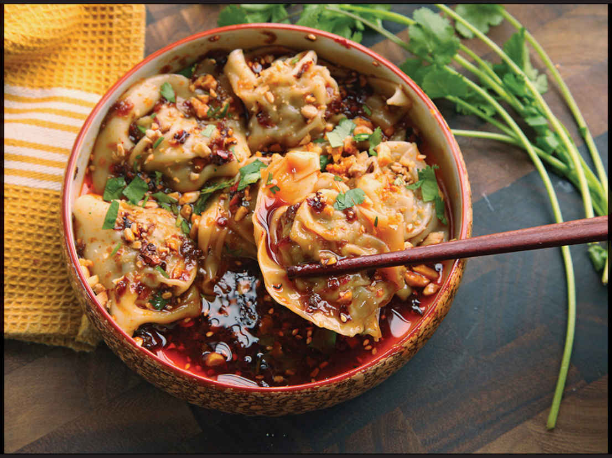

SICHUAN-STYLE HOT AND SOUR WONTONS (SUANLA CHAOSHOU)
|
Yield Makes about 40 wontons, serving 6 to 8 as an appetizer or light meal |
Active Time 1 hour Total Time 1 hour |
INGREDIENTS
For the Wontons:
1 pound (450 g) ground pork shoulder
2 teaspoons (8 g) kosher salt, plus more if needed
1 tablespoon (12 g) sugar, plus more if needed
1 teaspoon (3 g) finely ground white pepper, plus more if needed
1½ ounces (20 g) minced scallions or Chinese chives (about 2 scallions)
2 teaspoons (5 g) minced garlic (about 2 medium cloves)
2 teaspoons (10 ml) Shaoxing wine or dry sherry
40 thin square wonton wrappers
For the Sauce:
1 recipe Hot and Sour Chile Sauce (here)
To Cook and Serve:
2 tablespoons (15 g) lightly crushed roasted peanuts or Fried Peanuts (optional; here)
Small handful of fresh cilantro leaves and fine stems, roughly chopped
Sweet and savory. Slippery and slick. Juicy and tender. Hot and sour. Garlicky. So. Freaking. Good.
These are all words that should enter your head as you slide back a bowl of suanla chaoshou, the Sichuan-style wontons that come coated in an intensely aromatic sauce made with vinegar, garlic, and chile oil.
I first tasted a version of the dish at Mary Chung’s (which she called “Suan La Chow Show”), the longstanding Cambridge restaurant that was one of the early pioneers of Sichuan American cuisine. Her version came on a bed of bean sprouts with a moderately hot chile oil and a hint of vinegar. In the subsequent years I’ve tried the dish all over the United States and in Sichuan and have come to prefer a version with a bit more vinegar in the sauce and heat in the chile oil. Still, I have Mrs. Chung’s success to thank for the wontons in chile oil, Chongqing-style hot and numbing chicken, and mapo tofu that were the mainstay of my diet for the decade that I lived in the area.*
Like many Asian dishes, suanla chaoshou is as much about textural contrast as it is about flavor. The wrappers should be slippery and tender, with a flavor that is almost bland compared with the sweet, mild pork filling (sweet but not cloying, as some versions tend to be). In turn, the wontons as a whole are also bland when compared with the sauce. It’s the sauce that brings on the contrasts with its almost overly intense flavor, thanks to Chinkiang vinegar, soy sauce, and plenty of chile oil with crunchy bits of fried dried chiles and, if you’re inclined, peanuts or sesame seeds.
For the wontons, I use a simple mix of ground fatty pork (ask your butcher to grind up some extra-fatty pork shoulder for you or look for the whitest, streakiest grind you can find in the supermarket display) flavored with Chinese chives or scallions, a little garlic, white pepper, salt, sugar, and a splash of Shaoxing wine or dry sherry.
DIRECTIONS
1 For the Wontons: Combine the pork, salt, sugar, white pepper, scallions, garlic, and wine in a medium bowl and knead and turn with clean hands until the mixture is homogenous and starting to feel tacky/sticky, about 1 minute. Transfer about a teaspoon to a microwave-safe plate and microwave on high power until cooked through, about 10 seconds. Taste and adjust the seasoning with more salt, white pepper, and/or sugar if desired.
2 Fill the wontons, using a scant tablespoon (about 12 g) of filling per skin and following the instructions on here for shaping.
3 To Cook and Serve: Bring a wok or large saucepan of water to a boil. Cook 15 to 20 wontons at a time until they are completely cooked through, about 4 minutes. Drain the wontons and transfer to a warm serving platter. Spoon the Hot and Sour Chile Sauce on top. Sprinkle with peanuts and minced cilantro and serve immediately. Repeat with the remaining wontons.

*I also have her to thank for the highlight of my very short career as a rock star: the band with whom I occasionally guest-performed played at the All-Asia Lounge in Central Square, a restaurant operated by Mary Chung’s daughter and her husband. The band was called The Emoticons. Really.